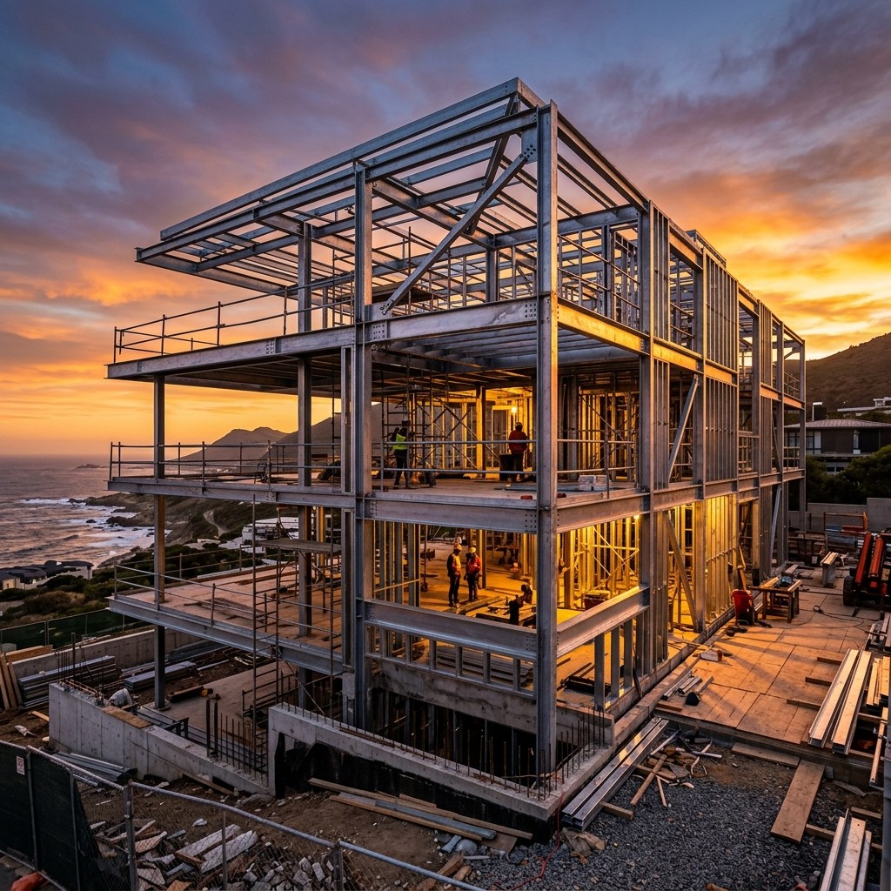
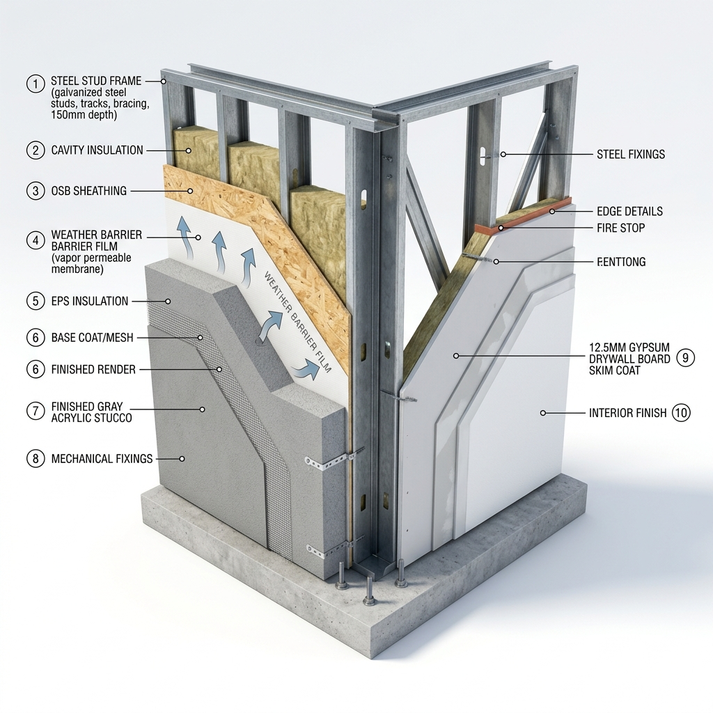
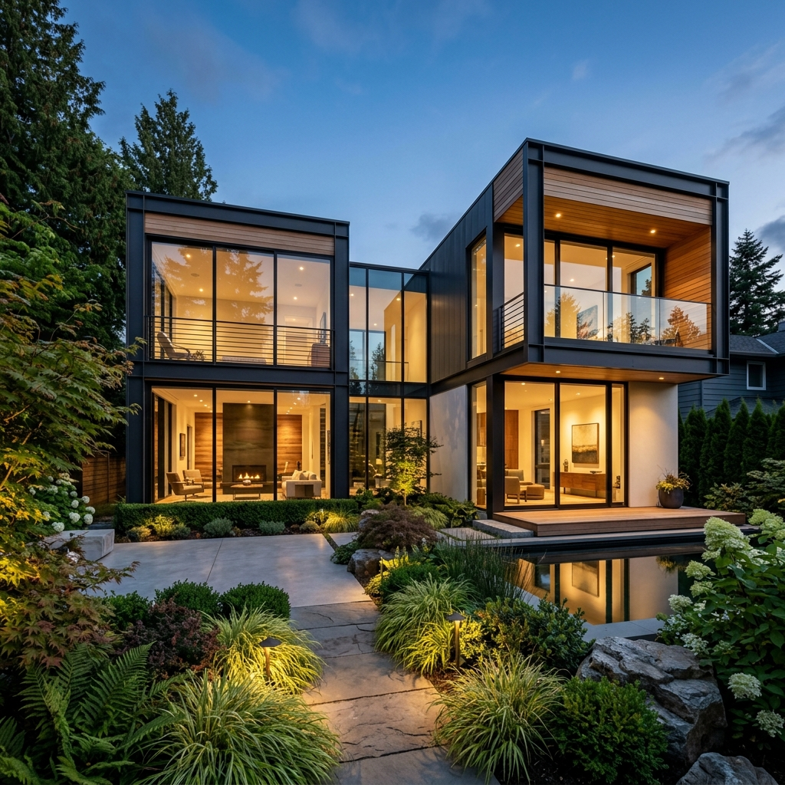

Sistema de Construcción
Steel Framing
El sistema de construcción Steel Framing no es simplemente una alternativa al ladrillo; es una revolución de ingeniería estructural. Basado en perfiles de acero galvanizado ligero, este método industrializado garantiza precisión milimétrica, sismorresistencia certificada y un aislamiento térmico y acústico sin precedentes.

check_circle Estructuras Reguladas por Normas IRAM
Perfiles estructurales de acero galvanizado Z275.
El Alma del Muro: Despiece del Sistema
Haz clic en cada una de las capas para explorar los componentes de alta tecnología que conforman una pared de Steel Framing.

Estructura Metálica de Acero
Esqueleto estructural compuesto por perfiles montantes (PGC) y soleras (PGU) de chapa de acero zincada por inmersión en caliente. Poseen un espesor mínimo de 0.9 mm y están regulados bajo normas IRAM IAS U 500-205, lo que asegura un comportamiento sísmico óptimo en el suelo de Tucumán.
Mitos y Realidades del Sistema

¿Listo para construir tu casa de forma inteligente?
Hacé realidad tu proyecto en Tucumán. En Constructora ByB combinamos la precisión del sistema de construcción Steel Framing con mano de obra certificada y acabados de lujo llave en mano.